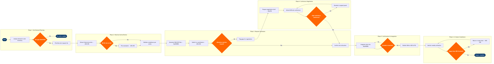

Slot Coordination & Management
BPMN Process Flow

Click to enlarge · Scroll to zoom · Drag to pan
L4 Step Detail
| Step | L4 Step Name | Role | System | Input | Output | KPI | Pain Point / Risk | Decision | Exception |
|---|---|---|---|---|---|---|---|---|---|
| 1.1 | Extract schedule demand from seasonal network plan | Network Planning Analyst | Amadeus SkyWORKS | Seasonal network plan, O&D demand forecasts from SkyCAST | Slot demand list by airport, time window, and frequency | Slot demand coverage ≥95% of planned rotations | SkyCAST demand forecasts refresh every 6 weeks; demand spikes at thin O&D markets are under-modelled, causing late slot requests | ||
| 1.2 | Identify IATA Level 2 and Level 3 airports | Schedule Planning Analyst | OAG Schedule Analyser | Slot demand list, IATA Airport Coordination Status database | Constrained airport list with coordination level classification | 100% of Level 2/3 airports flagged before SCR deadline | IATA coordination status can change season-to-season; OAG updates lag IATA bulletins by up to 2 weeks | ✓ | |
| 1.3 | Prioritise slot request list by strategic value | Senior Schedule Planner | Amadeus SkyWORKS | Constrained airport list, route profitability ranking from SkyCAST | Prioritised slot request list with must-have vs. aspirational tiers | Must-have slots defined for ≥100% of peak-season hub rotations | No alliance membership limits bilateral swap leverage; slots must be won outright at IATA conference without partner support | ||
| 2.1 | Extract historical slot series from IATA CRS | Schedule Coordinator | IATA CRS (Coordinated Reservation System) | Prioritised slot request list, previous season slot holdings | Historical slot series list with grandfather rights baseline | Grandfather rights baseline coverage ≥80% of current request list | CRS historical data can misclassify series interrupted by force majeure (e.g. COVID waivers); manual review required to avoid wrongful loss of grandfather status | ✓ | |
| 2.2 | Validate 80/20 utilisation rule compliance per series | Schedule Coordinator | Amadeus SkyWORKS | Historical slot series, operated flight data from previous season | Compliance report — series meeting vs. at-risk of 80/20 rule | 100% of series validated before IATA submission deadline | Disruptions (weather, ATC, COVID waivers) can erode utilisation rates below 80%; waiver applications must be filed separately and tracked manually | ✓ | |
| 2.3 | File force majeure exemption for at-risk series | Schedule Coordinator | IATA CRS (Coordinated Reservation System) | At-risk series list, operational disruption evidence | Exemption request messages submitted to airport coordinator | 100% of exemption requests filed ≥10 weeks before IATA season start | Each airport coordinator has different evidence requirements and SLAs; no standardised API — submissions are email or portal-based, creating audit trail gaps | ✓ | |
| 3.1 | Generate SSIM SCR messages in SkyWORKS | Schedule Coordinator | Amadeus SkyWORKS | Validated slot request list with grandfather baseline | Slot Clearance Request (SCR) messages in IATA SSIM Chapter 6 format | 0 SCR format errors on initial submission; 100% deadline compliance | SSIM Chapter 6 format requires exact field alignment; manual overrides in SkyWORKS for non-standard time codes introduce formatting errors caught only at coordinator end | ✓ | |
| 3.2 | Submit SCR messages to airport coordinators | Schedule Coordinator | IATA CRS (Coordinated Reservation System) | SCR messages, IATA submission portal credentials per airport | Filed slot requests with submission timestamps | 100% of SCRs submitted before coordinator deadline (typically 8–10 weeks pre-conference) | IATA CRS portal is fragmented — some airports use national systems (ACL in UK, COHOR in France) with separate logins; deadline misses cause permanent loss of grandfather rights | ||
| 3.3 | Review initial slot allocation against requests | Senior Schedule Planner | Amadeus SkyWORKS | Initial slot allocation proposals from coordinators (SAL messages) | Gap analysis report — approved, partially approved, and denied slots | Slot attainment rate ≥90% on grandfather-protected series; ≥70% on new requests | Coordinators at capacity-constrained hubs (e.g. LHR, CDG) routinely propose off-peak alternatives that are operationally infeasible for the planned rotation | ✓ | |
| 4.1 | Prepare negotiation brief with slot gap analysis | Senior Schedule Planner | Amadeus SkySYM | Gap analysis report, alternative time window options | Negotiation brief with ranked alternatives and walk-away positions | Negotiation brief approved by VP Network Planning ≥5 days before conference | SkySYM simulation of alternate slot combinations takes 3–6 hours for large networks; limited time between initial allocation receipt and conference date | ||
| 4.2 | Attend IATA scheduling conference | Schedule Coordinator | IATA CRS (Coordinated Reservation System) | Negotiation brief, coordinator contact list, current allocation status | Negotiated slot agreements and conference minutes | ≥85% of flagged gaps addressed during conference window | Carrier has no Star Alliance / oneworld / SkyTeam membership — cannot leverage partner slot pools or reciprocal swap agreements available to alliance carriers | ✓ | |
| 4.3 | Negotiate slot swaps with peer carriers | Senior Schedule Planner | OAG Schedule Analyser | Remaining slot gaps post-conference, OAG competitor slot holdings | Slot swap agreements or bilateral exchange proposals | ≥5 beneficial swap agreements secured per season | Non-alliance carrier has limited bilateral relationships; OAG data used to identify swap candidates but outreach is manual with no standardised swap marketplace | ✓ | |
| 4.4 | Escalate unresolved gaps to coordinator appeal panel | VP Network Planning | IATA CRS (Coordinated Reservation System) | Unresolved slot gaps post-negotiation, regulatory correspondence | Formal appeal submissions; escalation decision log | Appeal filed within 5 business days of conference close for all critical gaps | Appeal panels at slot-coordinated airports have 90-day review cycles; schedule must be provisionally published before appeal outcome, creating rework risk | ✓ | |
| 5.1 | Receive and parse confirmed SAL messages | Schedule Coordinator | IATA CRS (Coordinated Reservation System) | Final Slot Allocation List (SAL) messages from all coordinators | Confirmed slot database by airport, date range, and time window | 100% of SAL messages loaded within 24 hours of receipt | SAL format varies by national coordinator — UK ACL uses proprietary fields not fully mapped by IATA CRS parser; manual reconciliation required for ~12% of slots | ✓ | |
| 5.2 | Integrate confirmed slots into SkyWORKS schedule | Schedule Coordinator | Amadeus SkyWORKS | Confirmed slot database, current seasonal schedule draft | Updated schedule with slot-constrained departure times | Zero slot-schedule mismatches in published SSIM; reconciliation completed ≤48hrs after SAL load | SkyWORKS SSIM import does not auto-flag slot breaches — planners must run manual overlap check; errors propagate to GDS and PSS if undetected | ✓ | |
| 5.3 | Publish validated SSIM to GDS and Altéa PSS | Schedule Planner | Amadeus Altéa PSS | Validated schedule with confirmed slots | SSIM distributed to Sabre GDS, Travelport GDS, Amadeus GDS, and Altéa booking engine | SSIM published ≥120 days before season start; 0 slot-violation entries in distributed file | Altéa PSS and GDS ingestion pipelines process SSIM sequentially; last-minute slot amendments require full re-distribution cycle, causing temporary booking inconsistencies | ||
| 6.1 | Monitor weekly slot utilisation during season | Schedule Coordinator | Amadeus SkyWORKS | Operated flight records from Altéa PSS, slot holdings database | Weekly utilisation report per slot series | Slot utilisation ≥80% per series (IATA 80/20 rule); alert triggered at <85% as early warning | ATC delays, weather diversions, and maintenance AOG events erode utilisation; real-time data from Altéa takes up to 12 hours to reflect in SkyWORKS reporting | ✓ | |
| 6.2 | Return or swap underutilised slots to coordinator | Schedule Coordinator | IATA CRS (Coordinated Reservation System) | At-risk utilisation report, alternative operational options | Slot relinquishment or swap messages filed with coordinator | 100% of relinquishments filed ≥6 weeks before operation date; 0 penalty notices received | Late relinquishments attract financial penalties from Level 3 coordinators; sub-80% utilisation without exemption causes loss of grandfather rights for following season | ✓ | |
| 6.3 | Document season performance for next-cycle planning | Senior Schedule Planner | Tableau | Final utilisation data, negotiation outcomes, exemption results | Season debrief report with slot attainment rate and recommendations | Debrief report published within 30 days of IATA season end | Data is spread across SkyWORKS, IATA CRS, and Altéa PSS with no unified reporting layer; Tableau consolidation is manual and time-intensive |